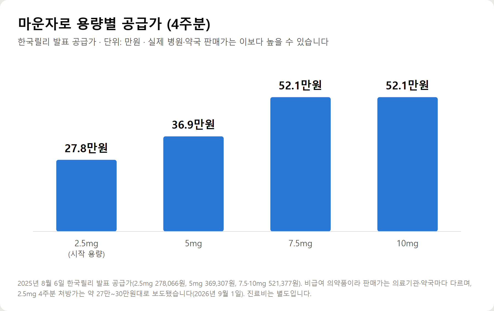
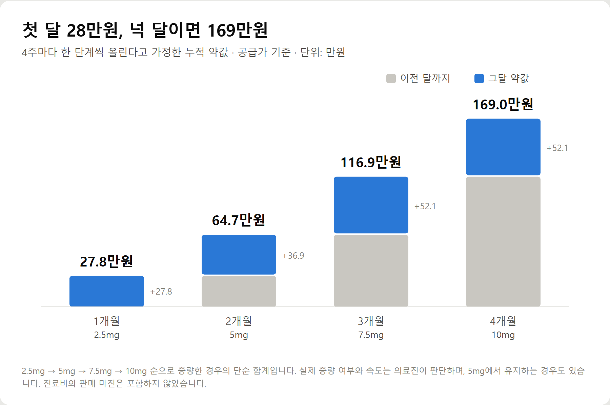
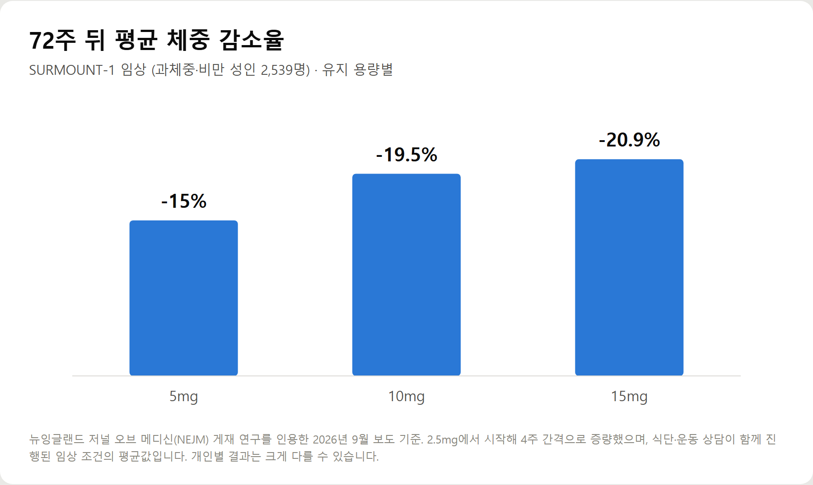
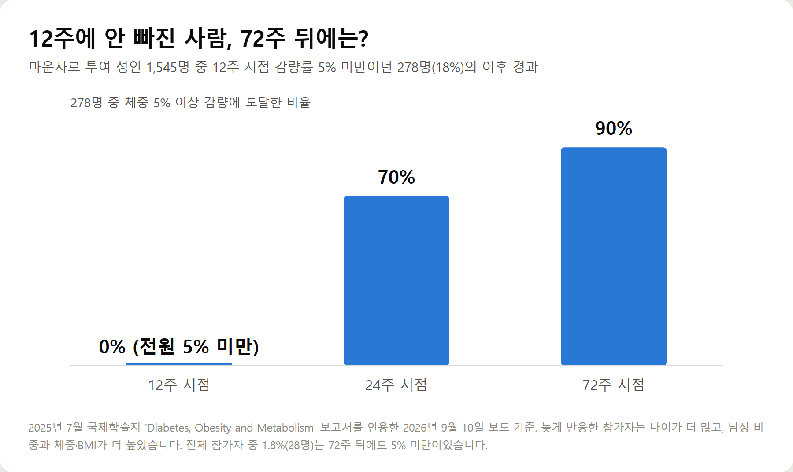

<meta charset="utf-8">
<title>마운자로 비용과 효과, 숫자로 정리 — 나의 투자 그리고 행복한 여행</title>
<meta name="description" content="마운자로 4주분 공급가는 2.5mg 27만8,066원부터 7.5·10mg 52만1,377원까지, 넉 달 누적 169만원입니다. 처방 기준(BMI 30 또는 27+동반질환), 건강보험·실손보험 적용 여부, 72주 감량률과 부작용을 2026년 9월 기준으로 정리했습니다.">
<meta name="viewport" content="width=device-width, initial-scale=1">
<link rel="canonical" href="https://danielmoon82.github.io/moon/posts/mounjaro-2026-09-12.html">
<link rel="preconnect" href="https://fonts.googleapis.com">
<link rel="preconnect" href="https://fonts.gstatic.com" crossorigin>
<link rel="stylesheet" href="https://fonts.googleapis.com/css2?family=Hahmlet:wght@400;600;800&family=IBM+Plex+Mono:wght@400;500&family=IBM+Plex+Sans+KR:wght@300;400;500;600&display=swap">

<style>
  :root{
    --paper:#F2EEE6;--surface:#FAF8F3;--surface-2:#E7E1D5;
    --ink:#191510;--ink-2:#4A4235;--ink-3:#7D7364;
    --line:#D6CEBF;--line-soft:#E4DDD0;--accent:#B06A15;--accent-bright:#C2761A;
    --up:#E5484D;--down:#3B82F6;
    --f-display:"Hahmlet",'Nanum Myeongjo',"Apple SD Gothic Neo",serif;
    --f-body:"IBM Plex Sans KR","Apple SD Gothic Neo","Malgun Gothic",sans-serif;
    --f-mono:"IBM Plex Mono","SFMono-Regular",Consolas,monospace;
    --pad:clamp(20px,5vw,64px);
  }
  @media (prefers-color-scheme:dark){
    :root:not([data-theme="light"]){
      --paper:#0B1120;--surface:#121A2C;--surface-2:#1A2439;
      --ink:#E9EEF7;--ink-2:#A9B5C9;--ink-3:#72809A;
      --line:#26314A;--line-soft:#1D2739;--accent:#E8A33D;--accent-bright:#F0B45C;
    }
  }
  *{box-sizing:border-box;}
  body{margin:0;background:var(--paper);color:var(--ink);font-family:var(--f-body);
    font-weight:300;font-size:1rem;line-height:1.75;-webkit-font-smoothing:antialiased;}
  a{color:inherit;}
  img{max-width:100%;height:auto;}
  .wrap{max-width:760px;margin:0 auto;padding-inline:var(--pad);}
  .nav{position:sticky;top:0;z-index:20;background:color-mix(in srgb,var(--paper) 88%,transparent);
    backdrop-filter:saturate(180%) blur(12px);border-bottom:1px solid var(--line);}
  .nav-in{display:flex;align-items:center;justify-content:space-between;height:58px;}
  .brand{font-family:var(--f-display);font-weight:600;font-size:1rem;letter-spacing:-.02em;text-decoration:none;}
  .back{font-family:var(--f-mono);font-size:.72rem;color:var(--ink-3);text-decoration:none;}
  .article{padding-block:clamp(40px,7vw,72px) clamp(56px,9vw,96px);}
  .eyebrow{font-family:var(--f-mono);font-size:.68rem;letter-spacing:.16em;text-transform:uppercase;
    color:var(--accent);margin:0 0 14px;}
  h1{font-family:var(--f-display);font-weight:800;font-size:clamp(1.6rem,4.4vw,2.3rem);
    line-height:1.3;letter-spacing:-.03em;margin:0 0 16px;}
  .byline{font-family:var(--f-mono);font-size:.72rem;color:var(--ink-3);
    padding-bottom:24px;border-bottom:1px solid var(--line);margin-bottom:32px;}
  h2{font-family:var(--f-display);font-weight:600;font-size:1.25rem;letter-spacing:-.02em;margin:42px 0 14px;}
  h3{font-family:var(--f-display);font-weight:600;font-size:1.05rem;letter-spacing:-.02em;
    margin:30px 0 10px;padding-top:14px;border-top:1px solid var(--line-soft);}
  h3 .code{font-family:var(--f-mono);font-size:.7rem;font-weight:400;color:var(--ink-3);margin-left:6px;}
  p{margin:0 0 18px;color:var(--ink-2);}
  ul.checks{margin:0 0 18px;padding-left:20px;color:var(--ink-2);}
  ul.checks li{margin-bottom:8px;font-size:.94rem;}
  table{width:100%;border-collapse:collapse;font-size:.88rem;margin-bottom:8px;}
  th{font-family:var(--f-mono);font-size:.66rem;letter-spacing:.06em;text-transform:uppercase;
    color:var(--ink-3);text-align:right;padding:8px 6px;border-bottom:1px solid var(--line);}
  th:first-child{text-align:left;}
  td{padding:10px 6px;border-bottom:1px solid var(--line-soft);color:var(--ink-2);}
  td.num{font-family:var(--f-mono);text-align:right;font-variant-numeric:tabular-nums;}
  td.up{color:var(--up);} td.down{color:var(--down);}
  .scroll{overflow-x:auto;}
  figure{margin:22px 0;}
  figure img{display:block;border-radius:3px;background:var(--surface-2);}
  figcaption{margin-top:8px;font-family:var(--f-mono);font-size:.68rem;color:var(--ink-3);text-align:center;}
  .note{margin-top:34px;padding:16px 18px;border-left:3px solid var(--accent);
    background:var(--surface);border-radius:0 3px 3px 0;}
  .note p{margin:0;font-size:.85rem;color:var(--ink-3);}
  .foot{border-top:1px solid var(--line);background:var(--surface);padding-block:30px 38px;}
  .foot p{margin:0;font-size:.8rem;color:var(--ink-3);}
</style>

<nav class="nav">
  <div class="wrap nav-in">
    <a class="brand" href="../index.html">나의 투자 그리고 행복한 여행</a>
    <a class="back" href="../index.html#stocks">← 시황으로</a>
  </div>
</nav>

<main class="wrap article">
  <p class="eyebrow">Market</p>
  <h1>마운자로 비용과 효과, 숫자로 정리 — 공급가·72주 감량률·한일 가격차 (2026년 9월)</h1>
  <p class="byline">건강 · 2026-09-12 기준</p>

  <p>한 줄 요약: 마운자로 공급가는 4주분 27만8,066원(2.5mg)에서 52만1,377원(7.5·10mg)까지이며, 넉 달 누적 약값은 공급가로만 169만원입니다. 72주 임상 평균 감량률은 용량별 15~20.9%입니다.</p>
  <p>비급여라서 같은 약도 병원·약국마다 값이 다르고, 일본보다 최대 6배 비싸다는 보도까지 나왔습니다. 2026년 9월 1~12일 보도와 허가 기준으로 확인 가능한 숫자만 모았습니다.</p>
  <h2>핵심만 먼저</h2>
  <ul class="checks">
    <li>가격 — 4주분 공급가 2.5mg 27만8,066원, 5mg 36만9,307원, 7.5·10mg 52만1,377원. 실제 판매가는 이보다 높을 수 있습니다</li>
    <li>처방 기준 — BMI 30 이상, 또는 BMI 27 이상이면서 고혈압·이상지질혈증 같은 체중 관련 동반질환이 있는 성인</li>
    <li>보험 — 건강보험이 적용되지 않는 비급여입니다. 비만·체중감량 목적이면 실손보험 보상도 받기 어렵습니다</li>
    <li>효과 — 72주 임상에서 평균 15~20.9% 감량. 다만 초반에 반응이 늦은 사람도 적지 않습니다</li>
  </ul>
  <h2>1. 마운자로 가격 — 용량별로 얼마인가</h2>
  <p>한국릴리가 2025년 8월 6일 발표한 4주분 공급가는 아래와 같습니다. 공급가는 제약사가 병원·약국에 넘기는 값입니다.</p>
  <figure><figcaption>마운자로 용량별 4주분 공급가 (단위: 만원, 2025년 8월 6일 한국릴리 발표)</figcaption></figure>
  <p>환자가 실제로 내는 값은 이보다 높을 수 있습니다. 2026년 9월 1일 보도에 따르면 2.5mg 4주분 처방 가격은 병·의원에 따라 약 27만~30만원대에 형성돼 있습니다.</p>
  <p>같은 약인데 값이 다른 이유는 비급여이기 때문입니다. 정부가 판매가를 정하지 않아서 의료기관·약국마다 가격이 다릅니다. 병원에서 받은 처방전은 다른 약국에서도 조제할 수 있으니, 약값은 비교해 보고 사는 편이 낫습니다.</p>
  <p>진료비는 약값과 별도입니다. 이 역시 병원마다 차이가 있습니다.</p>
  <h2>2. '한 달 28만원'이 아닌 이유 — 4주마다 오르는 비용</h2>
  <p>마운자로는 처음부터 원하는 용량으로 시작하지 않습니다. 2.5mg에서 시작해 몸이 적응하는지 보면서 최소 4주 간격으로 한 단계씩 올립니다.</p>
  <p>2.5mg은 체중을 본격적으로 줄이는 용량이라기보다, 몸이 약에 적응하고 위장 부작용을 줄이기 위한 시작 용량입니다.</p>
  <figure><figcaption>4주마다 증량한다고 가정한 마운자로 누적 약값 (공급가 기준, 단위: 만원)</figcaption></figure>
  <p>2.5mg → 5mg → 7.5mg → 10mg 순으로 올린다고 가정하면, 공급가만 더해도 1개월 27.8만원, 2개월 64.7만원, 3개월 116.9만원, 4개월 169만원이 됩니다.</p>
  <div class="note"><p>예산을 잡을 때는 첫 달 가격이 아니라 석 달째 가격을 기준으로 잡는 것이 현실적입니다.</p></div>
  <p>눈여겨볼 점이 하나 있습니다. 7.5mg과 10mg은 공급가가 52만1,377원으로 같습니다. 비용이 크게 뛰는 구간은 5mg에서 7.5mg으로 넘어갈 때로, 한 달에 약 15만원이 늘어납니다.</p>
  <p>모든 사람이 10mg까지 올리는 것은 아닙니다. 증량 여부와 속도는 효과와 부작용을 보고 의료진이 판단합니다.</p>
  <h2>3. 마운자로 처방 기준 — BMI 몇부터 가능한가</h2>
  <p>마운자로는 전문의약품입니다. 식약처 허가 기준상 체중 관리 목적의 투여 대상은 두 가지입니다.</p>
  <ul class="checks">
    <li>BMI 30 이상인 성인</li>
    <li>BMI 27 이상 30 미만이면서 체중 관련 동반질환(고혈압, 이상지질혈증, 폐쇄성 수면무호흡, 심혈관질환 등)이 하나 이상 있는 성인</li>
  </ul>
  <p>BMI는 몸무게(kg)를 키(m)의 제곱으로 나눈 값입니다. 예를 들어 키 170cm에 80kg이면 80 ÷ (1.7 × 1.7) = 약 27.7입니다.</p>
  <p>키별로 기준이 되는 몸무게를 계산해 보면 이렇습니다.</p>
  <ul class="checks">
    <li>키 160cm — BMI 27은 약 69.1kg, BMI 30은 약 76.8kg</li>
    <li>키 165cm — BMI 27은 약 73.5kg, BMI 30은 약 81.7kg</li>
    <li>키 170cm — BMI 27은 약 78.0kg, BMI 30은 약 86.7kg</li>
    <li>키 175cm — BMI 27은 약 82.7kg, BMI 30은 약 91.9kg</li>
  </ul>
  <p>여기서 40·50대가 자주 헷갈리는 부분이 있습니다. 건강검진 결과지에서 말하는 '비만'(국내 기준 BMI 25 이상)과 마운자로 허가 기준(30, 또는 동반질환이 있으면 27)은 다릅니다.</p>
  <p>반대로, 건강검진에서 혈압이나 콜레스테롤 수치로 관리 권고를 받았다면 BMI 27부터 기준 안에 들어올 수 있습니다. 어느 쪽이든 최종 판단은 진료를 통해 의사가 합니다.</p>
  <p>BMI가 이 기준에 못 미치는 경우의 처방은 허가 범위를 벗어납니다. 의료계에서는 정상 체중인 사람의 미용 목적 사용을 대표적인 오남용 유형으로 꼽고 있습니다.</p>
  <h2>4. 마운자로 효과 — 얼마나 빠지고, 왜 안 빠지는 사람이 있나</h2>
  <p>과체중·비만 성인 2,539명을 72주 동안 추적한 임상(SURMOUNT-1)에서 평균 체중 감소율은 유지 용량별로 5mg 15%, 10mg 19.5%, 15mg 20.9%였습니다.</p>
  <figure><figcaption>마운자로 유지 용량별 72주 평균 체중 감소율 (SURMOUNT-1, 2,539명)</figcaption></figure>
  <p>참고로 위고비는 한국·일본 환자 대상 임상에서 68주 기준 평균 13.2%의 감소율을 기록했습니다. 다만 임상 설계와 대상자가 달라 단순 비교는 어렵습니다.</p>
  <p>그렇다면 '이긴자로'는 왜 생길까요. 위고비·마운자로의 대규모 임상 결과를 보면, 최고 용량까지 투여해도 체중 감량이 5%에 못 미치는 '비반응자'가 전체의 10~15% 정도 있었습니다. 장과 뇌의 GLP-1 수용체 민감도가 사람마다 다르다는 분석이 나옵니다.</p>
  <p>그런데 '늦게 반응하는 사람'과 '반응하지 않는 사람'은 다릅니다.</p>
  <figure><figcaption>12주 시점 감량률 5% 미만이던 278명의 이후 5% 이상 감량 도달 비율</figcaption></figure>
  <p>2025년 7월 국제학술지에 공개된 보고서에서 마운자로를 투여한 성인 1,545명 중 278명(18%)은 12주가 지나도록 체중을 5%도 줄이지 못했습니다. 그런데 이 가운데 70%는 24주 뒤, 90%는 72주 뒤에 5% 이상 감량에 도달했습니다. 72주가 지나도 5% 미만이었던 사람은 전체의 1.8%(28명)였습니다.</p>
  <div class="note"><p>효과가 늦게 나타난 참가자는 나이가 더 많고, 남성 비중과 체중·BMI가 더 높았습니다.</p></div>
  <p>40·50대 남성이라면 초반 몇 주의 결과만 보고 판단하기 이르다는 뜻입니다. 반대로 효과가 없다고 스스로 용량을 올리는 것도 위험합니다. 용량이 높아질수록 위장관 부작용도 커지므로, 증량은 반드시 의료진과 상의해야 합니다.</p>
  <h2>5. 건강보험·실손보험 — 보험이 되나</h2>
  <p>현재 국내에서 마운자로는 건강보험이 적용되지 않는 비급여 의약품입니다. 약값은 환자가 전액 부담합니다.</p>
  <p>변화의 여지는 있습니다. 한국릴리는 2026년 6월 건강보험심사평가원에 제2형 당뇨병 치료 목적의 급여 적용을 다시 신청했습니다. 2024년 첫 신청 때는 급여 적정성을 인정받았지만 약가 협상이 결렬됐습니다.</p>
  <p>다만 이번 신청은 당뇨병 치료에 한정돼 있어, 등재되더라도 비만 치료까지 곧바로 건강보험이 적용되는 것은 아닙니다. 대한비만학회 심포지엄에서는 고도비만·제2형 당뇨병·심혈관질환 등 필요성이 큰 환자부터 단계적으로 급여를 적용하자는 제안이 나왔습니다.</p>
  <p>실손보험은 어떨까요. 살을 빼기 위한 비만 치료 목적의 약제비는 실손보험 약관상 보상 대상이 아닌 것이 원칙입니다. 당뇨병 등 질병 치료 목적으로 처방받은 경우에는 진단 근거와 보험사 심사에 따라 판단이 달라질 수 있으므로, 청구 전에 가입한 보험사에 확인하는 것이 정확합니다.</p>
  <p>건강보험이 적용되는 비만 치료도 있습니다. 비만대사수술입니다. BMI 35 이상, BMI 30 이상이면서 고혈압·이상지질혈증·제2형 당뇨병·수면무호흡증 등이 있는 경우, BMI 27.5 이상이면서 제2형 당뇨병이 있는 경우가 건강보험 적용 기준입니다.</p>
  <p>국내 9개 의료기관이 수술 환자 116명을 추적한 연구에서는 수술 1년 뒤 평균 체중이 26.8% 줄었고, 제2형 당뇨병 환자의 80.7%가 당뇨약을 끊었습니다. 수술은 비만 정도와 동반질환을 종합적으로 보고 결정하는 치료인 만큼 전문의 상담이 먼저입니다.</p>
  <h2>6. 시작 전 꼭 알아야 할 부작용과 주의사항</h2>
  <p>가장 흔한 부작용은 메스꺼움, 구토, 설사, 변비 같은 위장관 증상입니다. 처음 시작하거나 용량을 올릴 때 잘 생기고, 용량이 높을수록 위험도 커집니다.</p>
  <p>드물지만 췌장염, 담낭 질환, 심한 탈수가 보고됐습니다. 다른 당뇨약과 함께 쓰면 저혈당 위험이 있습니다. 갑상선 수질암 병력이나 가족력이 있는 경우, 임신 중이거나 계획 중인 경우에는 반드시 진료 때 알려야 합니다.</p>
  <p>빠르게 살이 빠지면 근육도 함께 줄 수 있습니다. 단백질 섭취와 근력 운동을 같이 하는 것이 권장되는 이유입니다.</p>
  <p>끊으면 어떻게 될까요. 투여를 멈추면 식욕이 다시 늘어 체중이 돌아가기 쉽습니다. 약을 쓰는 동안 식습관과 운동 습관을 함께 바꿔야 끊은 뒤에도 유지에 도움이 됩니다.</p>
  <p>해외에서 사 오는 것은 안 됩니다. 일본에서는 2.5mg 4주분이 약 5만원 수준이라 이른바 '스시자로' 수요가 늘었는데, 비만치료제 주사제의 개인 반입은 원칙적으로 제한됩니다. 관세청 불법 반입 적발 건수는 2024년 4건에서 2025년 1,189건, 2026년 상반기에만 4,155건으로 늘었고 적발된 제품은 폐기됩니다. 정품 여부와 냉장 보관 상태를 확인할 수 없다는 점도 문제입니다.</p>
  <p>정부는 위고비·마운자로 등을 오남용우려의약품으로 지정하는 방안을 추진하고 있습니다. 처방 절차가 앞으로 더 엄격해질 수 있다는 뜻입니다.</p>
  <h2>7. 40·50대가 상담 전에 준비하면 좋은 것</h2>
  <ul class="checks">
    <li>① 최근 건강검진 결과지 — 혈압, 콜레스테롤, 공복혈당 수치가 동반질환 판단에 쓰입니다</li>
    <li>② 현재 먹는 약 목록 — 특히 당뇨약은 저혈당 위험 때문에 꼭 알려야 합니다</li>
    <li>③ 가족력 — 갑상선 질환, 췌장 질환 이력</li>
    <li>④ 예산 — 첫 달이 아니라 3~4개월치를 기준으로 잡습니다</li>
    <li>⑤ 보험 — 실손보험 약관의 비급여·비만 관련 조항을 미리 확인합니다</li>
  </ul>
  <h2>8. 이런 분에게 맞고, 이런 분은 다시 생각해 보세요</h2>
  <p>상담해 볼 만한 경우입니다.</p>
  <ul class="checks">
    <li>BMI 30 이상이거나, 27 이상이면서 고혈압·이상지질혈증 등 진단을 받은 경우</li>
    <li>식단과 운동을 꾸준히 했는데도 체중 조절이 되지 않은 경우</li>
    <li>몇 달 이상 치료비를 감당할 여력이 있는 경우</li>
  </ul>
  <p>다시 생각해 볼 경우입니다.</p>
  <ul class="checks">
    <li>BMI가 기준에 못 미치는데 몇 kg만 빼고 싶은 경우 — 허가 범위 밖입니다</li>
    <li>첫 달 비용만 보고 시작하려는 경우 — 석 달째 부담이 커집니다</li>
    <li>약만 맞으면 된다고 생각하는 경우 — 끊은 뒤 요요가 쉽게 옵니다</li>
  </ul>
  <h2>자주 묻는 질문</h2>
  <p>Q. 마운자로 한 달 가격은 얼마인가요?</p>
  <p>4주분 공급가 기준으로 2.5mg 27만8,066원, 5mg 36만9,307원, 7.5mg·10mg 52만1,377원입니다. 실제 판매가는 병원·약국마다 다르며 2.5mg은 약 27만~30만원대로 보도됐습니다. 진료비는 별도입니다.</p>
  <p>Q. BMI가 몇이어야 처방받을 수 있나요?</p>
  <p>BMI 30 이상이거나, BMI 27 이상이면서 고혈압·이상지질혈증·폐쇄성 수면무호흡·심혈관질환 등 체중 관련 동반질환이 있는 성인이 허가 기준입니다.</p>
  <p>Q. 실비(실손보험) 청구가 되나요?</p>
  <p>비만·체중감량 목적의 약제비는 원칙적으로 보상 대상이 아닙니다. 당뇨병 등 질병 치료 목적이라면 보험사 심사에 따라 달라질 수 있으니 가입한 보험사에 먼저 문의하세요.</p>
  <p>Q. 위고비와 마운자로는 무엇이 다른가요?</p>
  <p>위고비(세마글루타이드)는 GLP-1 한 가지 호르몬에, 마운자로(티르제파타이드)는 GLP-1과 GIP 두 가지에 작용합니다. 두 약 모두 주 1회 주사이고 처방 기준(BMI)도 같습니다. 감량률은 임상마다 설계가 달라 직접 비교하기 어렵습니다.</p>
  <p>Q. 몇 주 맞았는데 효과가 없으면 용량을 올려야 하나요?</p>
  <p>스스로 올리면 안 됩니다. 연구에서 12주에 5%를 못 뺀 사람의 90%가 72주에는 5% 이상 감량했습니다. 효과와 부작용을 함께 보고 의료진이 증량을 결정합니다.</p>
  <p>Q. 끊으면 다시 찌나요?</p>
  <p>투여를 멈추면 식욕이 다시 늘어 체중이 돌아가기 쉽습니다. 약을 쓰는 기간 동안 단백질 위주 식단과 근력·유산소 운동 습관을 함께 만드는 것이 유지에 중요합니다.</p>
  <h2>정리하면</h2>
  <p>마운자로는 72주 임상에서 평균 15~20.9%의 감량 효과를 보인 약입니다. 하지만 비급여라 약값을 전부 본인이 내야 하고, 4주마다 용량이 오르면서 넉 달이면 공급가로만 169만원이 듭니다.</p>
  <p>처방 기준은 BMI 30, 또는 동반질환이 있으면 27입니다. 40·50대라면 건강검진 결과지의 혈압·콜레스테롤 수치가 판단에 들어갑니다.</p>
  <p>효과가 늦게 나타나는 사람도 많고, 그런 사람은 나이가 많은 편이었습니다. 초반 결과에 조급해하지 말고, 용량과 부작용은 의료진과 함께 관리하는 것이 안전합니다.</p>
  <p>다음 글에서는 위고비와 마운자로의 1년 비용을 용량별로 비교해 정리하겠습니다.</p>
  <div class="note"><p>이 글은 공개된 보도와 허가 정보를 정리한 것으로, 의사의 진단이나 처방을 대신하지 않습니다. 약물 사용 여부와 용량은 반드시 의료진과 상담해 결정하세요.</p></div>
  <p>※ 기준 시점: 공급가 2025년 8월 6일 한국릴리 발표, 판매가·한일 가격차·보험 재신청 2026년 9월 1일 보도, 임상 결과·오남용 논의 2026년 9월 10~11일 보도, 비만대사수술 연구 2026년 9월 12일 보도 기준. 가격과 보험 기준은 바뀔 수 있습니다.</p>
</main>

<footer class="foot">
  <div class="wrap"><p>나의 투자 그리고 행복한 여행 · 투자 판단의 참고 자료일 뿐, 매수·매도를 권유하지 않습니다.</p></div>
</footer>
